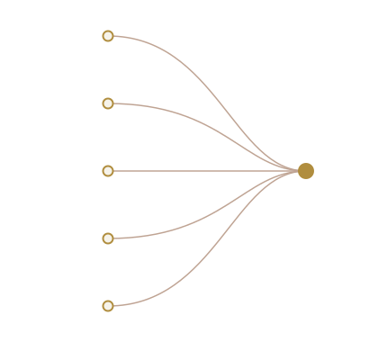

قسم العلوم التكنولوجية
يؤهّل القسم طلابه في مجالات التقنية الأكثر طلبًا في سوق العمل، من خلال خمسة تخصصات تكميلية تشترك في أساس واحد وتتفرّع كل منها نحو مسار مهني مختلف. هذا موقع تعريفي غير رسمي أعدّه طلاب القسم.

يُعنى قسم العلوم التكنولوجية في كلية مجتمع الأقصى بإعداد كوادر فنية قادرة على العمل في بيئات تقنية متعددة، عبر برامج تطبيقية تجمع بين الجانب النظري والتدريب العملي المكثف. يلتحق الطالب في السنة الأولى بمواد مشتركة، ثم يختار أحد التخصصات الخمسة ليكمل مساره فيه حتى التخرج.
اختر تخصصًا للاطلاع على تفاصيله: نبذة عنه، أبرز موادّه، ومجالات العمل المتاحة بعد التخرج.
أساسيات البرمجة والشبكات وقواعد البيانات وإدارة الأنظمة.
إنتاج الفيديو والموشن جرافيك والصوت والمحتوى الرقمي.
حماية الأنظمة والشبكات، وأساسيات الاختراق الأخلاقي والتشفير.
الهوية البصرية وتصميم المطبوعات والمحتوى الرقمي.
تصميم وبرمجة تطبيقات الجوال لأنظمة أندرويد وiOS.